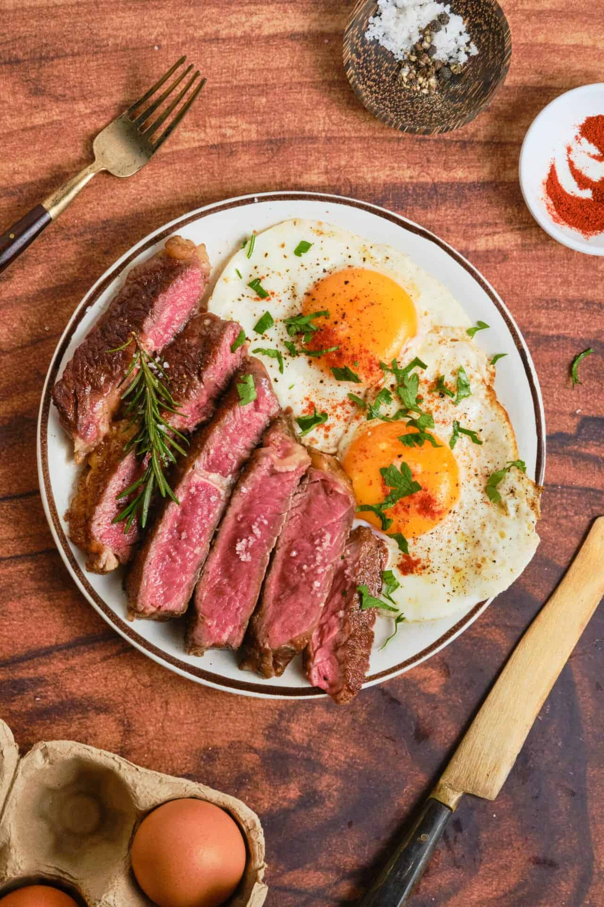

Home
Steak and Eggs Recipe

Ingredients
- 1 steak (ribeye, sirloin, or NY strip)
- 2-4 eggs
- Salt & pepper
- 1 tbsp butter
- 1 tsp oil
- Garlic & rosemary (optional)
Steps
- Cook the steak
- Pat steak dry and season with salt & pepper
- Heat pan very hot
- Add oil, then steak
- Cook 3-4 min per side (medium-rare) depending on thickness
- Add butter + garlic and spoon it over the steak
- Let it rest 5 minutes
- Cook the eggs on the same pan
- Lower heat
- Crack eggs in
- Cook however you like (sunny side, scrambled, over easy, etc)
- Combine
- Slice steak
- Put eggs on top or side
- Spoon leftover butter/juice over everything
- Enjoy!